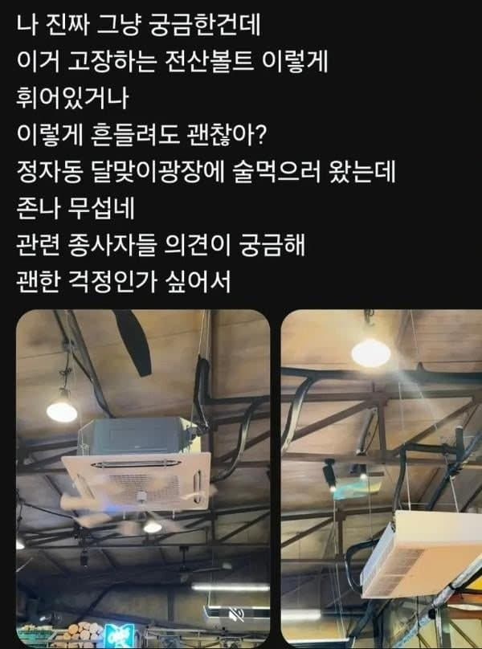

— · 147 · 2026-11-08 19:45:02 · 원문

수집 당시 댓글 147개
↳ 답글 · ㅇㅇ · 11.08 19:58:30
해갤러 · 11.08 19:49:22
ㅇㅇ · 11.08 19:49:47
↳ 답글 · ㅇㅇ · 11.08 20:03:26
ㅇㅇ · 11.08 19:50:18
↳ 답글 · ㅇㅇ · 11.08 20:06:22
DC전사쿠루미쨩 · 11.08 19:50:45
ㅇㅇ · 11.08 19:51:12
ㅇㅇ · 11.08 19:51:18
ㅇㅇ · 11.08 19:51:21
ㅇㅇ · 11.08 19:51:42
쿠두두룩 · 11.08 19:52:41
ㅇㅇ · 11.08 19:53:12
ㅇㅇ · 11.08 19:53:30
ㅇㅇ · 11.08 19:54:59
↳ 답글 · ㅇㅇ · 11.08 20:31:05
↳ 답글 · ㅇㅇ · 11.08 20:31:19
↳ 답글 · ㅇㅇ · 11.09 01:12:01
↳ 답글 · ㅇㅇ · 11.09 04:43:22
ㅇㅇ · 11.08 19:56:00
ㅇㅇ · 11.08 19:57:20
ㅇㅇ · 11.08 19:58:31
↳ 답글 · ㅇㅇ · 11.08 20:57:08
04p · 11.08 19:59:16
쿠다스 · 11.08 20:00:11
ㅇㅇ · 11.08 20:00:20
ㅇㅇ · 11.08 20:01:56
ㅇㅇ · 11.08 20:04:50
ㅇㅇ · 11.08 20:08:35
↳ 답글 · ㅇㅇ · 11.08 21:40:17
ㄱㄷㅂㅅㄱㄷ · 11.08 20:10:13
ㅇㅇ · 11.08 20:11:05
어린이사랑 · 11.08 20:11:13
ㅇㅇ · 11.08 20:11:41
ㅇㅇ · 11.08 20:11:47
↳ 답글 · ㅇㅇ · 11.08 20:30:30
ㅇㅇ · 11.08 20:12:59
ㅇㅇ · 11.08 20:14:27
ㅇㅇ · 11.08 20:19:57
원또 · 11.08 20:20:22
ㅇㅇ · 11.08 20:20:53
코스피의유쾌한반란 · 11.08 20:25:00
1111 · 11.08 20:26:04
ㅇㅇ · 11.08 20:27:13
ㅇㅇ · 11.08 20:28:52
ㅇㅇ · 11.08 20:37:48
ㅇㅇ · 11.08 20:41:17
ㅇㅇ · 11.08 20:48:10
37살월220 · 11.08 20:48:39
ㅇㅇ · 11.08 20:55:18
ㅇㅇ · 11.08 21:05:43
포도쥬스. · 11.08 21:06:40
↳ 답글 · ㅇㅇ · 11.08 23:52:21
dorosi · 11.08 21:08:09
ㅇㅇ · 11.08 21:10:55
ㅇㅇ · 11.08 21:17:08
637 · 11.08 21:18:01
ㅇㅇ · 11.08 21:25:40
ㅇㅇ · 11.08 21:29:10
ㅇㅇ · 11.08 21:41:56
↳ 답글 · ㅇㅇ · 11.08 22:00:33
ㅇㅇ · 11.08 21:48:50
화롯불 · 11.08 21:56:04
ㅇㅇ · 11.08 22:01:14
ㅇ · 11.08 22:11:19
ㅇㅇ · 11.08 22:15:54
ㅇㅇ · 11.08 22:21:46
ㅇㅇ · 11.08 22:29:47
ㅇㅇ · 11.08 22:59:11
ㅇㅇ · 11.08 22:59:16
ㅇㅇ · 11.08 22:59:21
ㅇㅇ · 11.08 22:59:25
1 · 11.08 23:05:26
ㅇㅇ · 11.08 23:09:04
ㅇㅇ · 11.08 23:09:06
↳ 답글 · ㅇㅇ · 11.09 04:02:50
ㅇㅇ · 11.08 23:20:14
ㅇㅇ · 11.08 23:26:44
ㅇㅇ · 11.08 23:28:12
ㅇㅇ · 11.08 23:34:00
ㅇㅇ · 11.08 23:53:56
ㅇㅇ · 11.09 00:07:57
ㅇㅇ · 11.09 00:12:38
ㅇㅇ · 11.09 01:16:39
↳ 답글 · ㅇㅇ · 11.09 15:28:38
ㅇㅇ · 11.09 01:22:58
주소킹 · 11.09 01:23:35
ㅇㅇ · 11.09 01:56:34
운빨좆망겜 · 11.09 02:30:21
ㅇㅇ · 11.09 02:32:59
ㅇㅇ · 11.09 02:55:04
ㅇㅇ · 11.09 02:59:46
ㅇㅇ · 11.09 03:24:23
ㅇㅇ · 11.09 04:02:57
ㅇㅇ · 11.09 04:03:01
타바코쉬카 · 11.09 04:29:00
ㅇㅇ · 11.09 04:35:02
ㅇㅇ · 11.09 10:30:57
ㅇㅇ · 11.09 11:51:26
ㅇㅇ · 11.09 15:28:24
ㅇㅇ · 11.08 00:56:14
↳ 답글 · ㅇㅇ · 11.08 00:58:17
↳ 답글 · ㅇㅇ · 11.08 19:48:17
↳ 답글 · ㅇㅇ · 11.08 19:54:13
↳ 답글 · ㅇㅇ · 11.08 19:55:34
↳ 답글 · ㅇㅇ · 11.08 19:57:35
콰광 · 11.08 00:57:26
ㅇㅇ · 11.08 00:58:41
ㅇㅇ · 11.08 01:09:47
ㅇㅇ · 11.08 01:19:44
ㅇㅇ · 11.08 01:23:49
↳ 답글 · ㅇㅇ · 11.08 19:46:57
↳ 답글 · ㅇㅇ · 11.08 19:49:52
땨뗘(봇) · 11.08 19:45:07
ㅇㅇ · 11.08 19:46:20
ㅇㅇ · 11.08 19:47:39
↳ 답글 · ㅇㅇ · 11.08 19:48:39
↳ 답글 · ㅇㅇ · 11.08 19:49:53
↳ 답글 · ㅇㅇ · 11.08 19:51:46
↳ 답글 · ㅇㅇ · 11.08 19:52:26
↳ 답글 · VOO충이 · 11.08 19:56:32
↳ 답글 · ㅇㅇ · 11.08 19:57:26
↳ 답글 · ㅇㅇ · 11.08 19:57:47
↳ 답글 · ㅇㅇ · 11.08 19:58:12
↳ 답글 · ㅇㅇ · 11.08 19:59:28
↳ 답글 · ㅇㅇ · 11.08 19:59:41
↳ 답글 · ㅇㅇ · 11.08 20:27:53
↳ 답글 · ㅇㅇ · 11.08 20:56:04
↳ 답글 · ㅇㅇ · 11.08 21:10:11
↳ 답글 · ㅇㅇ · 11.08 21:20:04
↳ 답글 · ㅇㅇ · 11.08 22:13:06
↳ 답글 · 만갤러 · 11.08 23:17:47
ㅇㅇ · 11.08 19:48:02
백돌이 · 11.08 19:48:05
↳ 답글 · 백돌이 · 11.08 19:52:27
↳ 답글 · ㅇㅇ · 11.08 20:00:16
↳ 답글 · ㅇㅇ · 11.09 00:09:17
↳ 답글 · ㅇㅇ · 11.09 01:38:26
ㅇㅇ · 11.08 19:48:13
↳ 답글 · 우지두부 · 11.08 20:43:46
↳ 답글 · ㅇㅈㅂㅇ · 11.08 22:14:11
↳ 답글 · 만갤러 · 11.08 23:19:22
ㅇㅇ · 11.08 19:48:41
↳ 답글 · ㅇㅇ · 11.09 04:01:10
ㅇㅇ · 11.08 19:48:46
ㅇㅇ · 11.08 19:48:50
ㅇㅇ · 11.08 19:49:12
댓글
수집 당시 댓글 147개
· ㅇㅇ · 11.08 19:58:30
해갤러 · 11.08 19:49:22
ㅇㅇ · 11.08 19:49:47
· ㅇㅇ · 11.08 20:03:26
ㅇㅇ · 11.08 19:50:18
· ㅇㅇ · 11.08 20:06:22
DC전사쿠루미쨩 · 11.08 19:50:45
ㅇㅇ · 11.08 19:51:12
ㅇㅇ · 11.08 19:51:18
ㅇㅇ · 11.08 19:51:21
ㅇㅇ · 11.08 19:51:42
쿠두두룩 · 11.08 19:52:41
ㅇㅇ · 11.08 19:53:12
ㅇㅇ · 11.08 19:53:30
ㅇㅇ · 11.08 19:54:59
· ㅇㅇ · 11.08 20:31:05
· ㅇㅇ · 11.08 20:31:19
· ㅇㅇ · 11.09 01:12:01
· ㅇㅇ · 11.09 04:43:22
ㅇㅇ · 11.08 19:56:00
ㅇㅇ · 11.08 19:57:20
ㅇㅇ · 11.08 19:58:31
· ㅇㅇ · 11.08 20:57:08
04p · 11.08 19:59:16
쿠다스 · 11.08 20:00:11
ㅇㅇ · 11.08 20:00:20
ㅇㅇ · 11.08 20:01:56
ㅇㅇ · 11.08 20:04:50
ㅇㅇ · 11.08 20:08:35
· ㅇㅇ · 11.08 21:40:17
ㄱㄷㅂㅅㄱㄷ · 11.08 20:10:13
ㅇㅇ · 11.08 20:11:05
어린이사랑 · 11.08 20:11:13
ㅇㅇ · 11.08 20:11:41
ㅇㅇ · 11.08 20:11:47
· ㅇㅇ · 11.08 20:30:30
ㅇㅇ · 11.08 20:12:59
ㅇㅇ · 11.08 20:14:27
ㅇㅇ · 11.08 20:19:57
원또 · 11.08 20:20:22
ㅇㅇ · 11.08 20:20:53
코스피의유쾌한반란 · 11.08 20:25:00
1111 · 11.08 20:26:04
ㅇㅇ · 11.08 20:27:13
ㅇㅇ · 11.08 20:28:52
ㅇㅇ · 11.08 20:37:48
ㅇㅇ · 11.08 20:41:17
ㅇㅇ · 11.08 20:48:10
37살월220 · 11.08 20:48:39
ㅇㅇ · 11.08 20:55:18
ㅇㅇ · 11.08 21:05:43
포도쥬스. · 11.08 21:06:40
· ㅇㅇ · 11.08 23:52:21
dorosi · 11.08 21:08:09
ㅇㅇ · 11.08 21:10:55
ㅇㅇ · 11.08 21:17:08
637 · 11.08 21:18:01
ㅇㅇ · 11.08 21:25:40
ㅇㅇ · 11.08 21:29:10
ㅇㅇ · 11.08 21:41:56
· ㅇㅇ · 11.08 22:00:33
ㅇㅇ · 11.08 21:48:50
화롯불 · 11.08 21:56:04
ㅇㅇ · 11.08 22:01:14
ㅇ · 11.08 22:11:19
ㅇㅇ · 11.08 22:15:54
ㅇㅇ · 11.08 22:21:46
ㅇㅇ · 11.08 22:29:47
ㅇㅇ · 11.08 22:59:11
ㅇㅇ · 11.08 22:59:16
ㅇㅇ · 11.08 22:59:21
ㅇㅇ · 11.08 22:59:25
1 · 11.08 23:05:26
ㅇㅇ · 11.08 23:09:04
ㅇㅇ · 11.08 23:09:06
· ㅇㅇ · 11.09 04:02:50
ㅇㅇ · 11.08 23:20:14
ㅇㅇ · 11.08 23:26:44
ㅇㅇ · 11.08 23:28:12
ㅇㅇ · 11.08 23:34:00
ㅇㅇ · 11.08 23:53:56
ㅇㅇ · 11.09 00:07:57
ㅇㅇ · 11.09 00:12:38
ㅇㅇ · 11.09 01:16:39
· ㅇㅇ · 11.09 15:28:38
ㅇㅇ · 11.09 01:22:58
주소킹 · 11.09 01:23:35
ㅇㅇ · 11.09 01:56:34
운빨좆망겜 · 11.09 02:30:21
ㅇㅇ · 11.09 02:32:59
ㅇㅇ · 11.09 02:55:04
ㅇㅇ · 11.09 02:59:46
ㅇㅇ · 11.09 03:24:23
ㅇㅇ · 11.09 04:02:57
ㅇㅇ · 11.09 04:03:01
타바코쉬카 · 11.09 04:29:00
ㅇㅇ · 11.09 04:35:02
ㅇㅇ · 11.09 10:30:57
ㅇㅇ · 11.09 11:51:26
ㅇㅇ · 11.09 15:28:24
ㅇㅇ · 11.08 00:56:14
· ㅇㅇ · 11.08 00:58:17
· ㅇㅇ · 11.08 19:48:17
· ㅇㅇ · 11.08 19:54:13
· ㅇㅇ · 11.08 19:55:34
· ㅇㅇ · 11.08 19:57:35
콰광 · 11.08 00:57:26
ㅇㅇ · 11.08 00:58:41
ㅇㅇ · 11.08 01:09:47
ㅇㅇ · 11.08 01:19:44
ㅇㅇ · 11.08 01:23:49
· ㅇㅇ · 11.08 19:46:57
· ㅇㅇ · 11.08 19:49:52
땨뗘(봇) · 11.08 19:45:07
ㅇㅇ · 11.08 19:46:20
ㅇㅇ · 11.08 19:47:39
· ㅇㅇ · 11.08 19:48:39
· ㅇㅇ · 11.08 19:49:53
· ㅇㅇ · 11.08 19:51:46
· ㅇㅇ · 11.08 19:52:26
· VOO충이 · 11.08 19:56:32
· ㅇㅇ · 11.08 19:57:26
· ㅇㅇ · 11.08 19:57:47
· ㅇㅇ · 11.08 19:58:12
· ㅇㅇ · 11.08 19:59:28
· ㅇㅇ · 11.08 19:59:41
· ㅇㅇ · 11.08 20:27:53
· ㅇㅇ · 11.08 20:56:04
· ㅇㅇ · 11.08 21:10:11
· ㅇㅇ · 11.08 21:20:04
· ㅇㅇ · 11.08 22:13:06
· 만갤러 · 11.08 23:17:47
ㅇㅇ · 11.08 19:48:02
백돌이 · 11.08 19:48:05
· 백돌이 · 11.08 19:52:27
· ㅇㅇ · 11.08 20:00:16
· ㅇㅇ · 11.09 00:09:17
· ㅇㅇ · 11.09 01:38:26
ㅇㅇ · 11.08 19:48:13
· 우지두부 · 11.08 20:43:46
· ㅇㅈㅂㅇ · 11.08 22:14:11
· 만갤러 · 11.08 23:19:22
ㅇㅇ · 11.08 19:48:41
· ㅇㅇ · 11.09 04:01:10
ㅇㅇ · 11.08 19:48:46
ㅇㅇ · 11.08 19:48:50
ㅇㅇ · 11.08 19:49:12